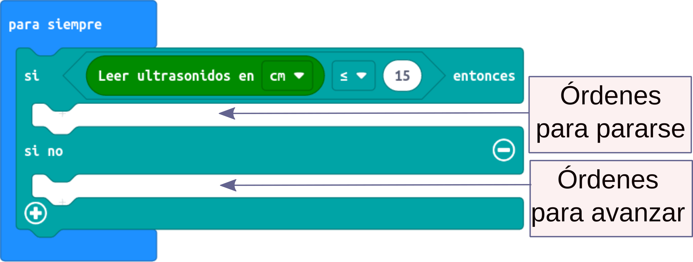

Ayuda a Mara en su aventura marciana
Task four. No me pienso tropezar.
Caso práctico
|
Cuaderno de bitácora. Día 7. Llevamos una semana en Marte. Gran parte del trabajo se ha concentrado en el estudio de las cuevas descubiertas por Nico y Mili, además de ir asegurando los sistemas de la nave y preparar el asentamiento definitivo durante nuestra estancia. Mili ha decidido que explore una cueva muy prometedora, mientras ellos se marchan a otra donde han pensado establecer la base de operaciones. Me ha dejado solita en una gran caverna de origen volcánico, cuyo suelo es prácticamente plano y sus paredes muy verticales y escarpadas. Aparentemente no comunica con ninguna otra caverna... Pero es lo que a Mili le gustaría saber. En fin, que me ha encargado que explore palmo a palmo la pared por si encuentro alguna abertura que conduzca a algún otro lugar. Pero de repente.... ¡¡Bluff!! ¡¡Se apagaron las luces!! ¡¡Menuda jugarreta!! A alguien se le ha olvidado recargar las baterías de las torres de iluminación... ¿Qué vas a hacer aquí Mara? ¿Te vas a quedar aquí atrapada a oscuras? ¿Dónde está ahora la salida? ¡No la veo! Mara ha decidido ir tanteando las paredes con su sensor de ultrasonidos. Irá probando hasta dar con la entrada de la caverna... pero no piensa tropezarse continuamente. 
|
|
Coloca a nuestra robot Mara frente a una pared, y ponla en funcionamiento.
Opcional 1: aumenta la velocidad a la máxima potencia. ¿Se detendrá en seco y no tropezará Mara con la pared? Opcional 2: si dispone de sensor de infrarrojo delantero, usarlo en vez de el de ultrasonidos (micro:bit Maqueen) Ampliación: intenta un programa que, si detecta la pared, vuelva hacia atrás, avance paralelamente a la pared un poco y vuelva a intentarlo, buscando una salida.
|
|
Proceso para llevar a cabo la tarea
El sensor de ultrasonidos HC-SR04
Robot de verdad, verdadero
¡Por fin estamos usando nuestra robot MARA como una verdadera robot! ¿Por qué?
Porque estamos usando sensores en la programación.
Y nuestra robot Mara tomará una decisión sin que se lo digamos. En lugar de eso, en función de lo que detecte en el entorno.
Sensor de ultrasonidos
En este primer reto MARA tiene incorporado un SENSOR DE ULTRASONIDOS. Sí, ese dispositivo gracioso que hace parecer que nuestra robot tiene ojos.
Ecolocalización
Pero en el fondo no son ojos; todo lo contrario. Es una boca y un oído. Si hay algo parecido en la naturaleza, lo tienen los murciélagos y algunos mamíferos marinos, como los delfines, y aves (ecolocalización). Estos animales emiten unos sonidos muy agudos o chillidos (ultrasonidos) que viajan rápidamente por el aire o por el agua. Estas ondas sonoras - ecos - rebotan en los obstáculos y vuelven a los órganos auditivos (oídos) de estos animales. Según el tiempo que tardan en ir y volver, pueden calcular la distancia a la que se encuentran.
Bloques de programación
Dependiendo del lenguaje de programación, este sensor puede leerse de diversas maneras. Por ejemplo:
Para saber más...
- Enlace a sensor ultrasonidos en makecode: https://blog.330ohms.com/2019/08/31/tutorial-5-sensor-de-distancia-con-maqueen/
- Apuntes de Visualino en Procomún: https://procomun.intef.es/ode/view/1453974406581 (Apuntes y proyectos VISUALINO II_ potenciómetro y LEDs. Sensores. A partir de la página 19).
- Ejemplo de código en Arduino. Tutorial de Luis Llamas: https://www.luisllamas.es/medir-distancia-con-arduino-y-sensor-de-ultrasonidos-hc-sr04/
- Ejemplo con la versión SRF05: http://arduparatodos.blogspot.com/2017/01/hc-sr04-o-srf-05-sensor-de-ultrasonido.html
Umbrales
¿Qué es un umbral?Se denomina umbral a un valor fijo de un sensor. Por ejemplo, el umbral en el ejercicio lo hemos establecido en 15 cm. Los umbrales se usan para delimitar la programación. En nuestro caso si los valores del sensor son mayores que 15 cm ejecutarán las órdenes para mover los motores. Si los valores son menores que 15 cm ejecutará la orden de paro y la de tocar la melodía. |
El bloque if
Condicionales
Los bloques "if" , o bloques "si", o condicionales, son bloques importantes usados en programación para ejecutar unas órdenes u otras si se cumple cierta condición.
Nosotros los usaremos para decidir si ejecutamos unas órdenes u otras órdenes distintas si el valor del sensor es mayor que el valor umbral o menor que el valor umbral.
Tipos de bloques condicionales
Existen tres variaciones: la primera, más sencilla, ejecuta unas órdenes si la condición es verdadera; la segunda, ejecuta además otras órdenes si no se cumple la condición y la tercera, más compleja, permite entre elegir más de una condición.
Paso a paso...
Pero, no nos liemos. Vamos a escribir nuestra condición despacio.
- ¿Qué queremos medir? Pues la distancia a la que el sensor de ultrasonido encuentra el obstáculo.
- ¿Con qué la vamos a comparar? Con el valor umbral de 15 cm.
- Podemos elegir una relación de comparación. En este caso elijo si es menor o igual.
Entonces, esta es nuestra condición:
makecode
Paso a paso...
De tal manera que dentro del bloque "si", si esa condición es verdadera, en el hueco se introducen las órdenes que deben cumplirse mientras la distancia sea menor o igual a 15 cm (en este caso parar los motores y tocar la melodía) y, si no se cumplen, en el hueco del "si no" se ponen las órdenes para cuando no se cumplen (moverse hacia adelante).
makecode
Para saber más...
- Más de condicionales para makecode: https://youtu.be/ODbggakwMk8
- Condicionales con arduinoblocks: https://youtu.be/d0Wcc0BL5Bo
- Condicionales en SCRATCH: https://youtu.be/t0cjd7-amNM
- Condicionales en ARDUINO
- Referencia del lenguaje LUIS LLAMAS: https://www.luisllamas.es/referencia-lenguaje-arduino/
- Guía de referencia arduino: https://www.arduino.cc/reference/es/language/structure/control-structure/if/
- Otra guía: http://euloxio.myds.me/dokuwiki/doku.php/doc:tec:elo:uc_arduino:arduino_c:condiciones
Razona el algoritmo
Averigua...
Una vez comprendida la misión, y elegido un lenguaje de programación adecuado a tu robot, intenta averiguar lo siguiente:
- ¿Qué órdenes o qué bloques necesitas para detectar distancia con el sensor de ultrasonidos?
- ¿Cómo distingues qué tiene que hacer el robot cuando la distancia sea menor o mayor al umbral?
Como siempre, puede ayudarte rellenar una tabla como ésta:
N |
Bloque o bloques (órdenes) |
Tiempo |
Observaciones |
| 1 | |||
| 2 | |||
| 3 | |||
| 4 | |||
| ... |
Cómo trabajar
- Normalmente se trabaja en parejas o en pequeños grupos, con un robot y un ordenador para programarlo.
- Aunque tu compañero/a sea quien maneje el ordenador o el robot, intenta siempre entender lo que estáis programando o haciendo: las órdenes o bloques que se están usando, el tiempo que tardan en ejecutarse, el orden en el que se colocan los bloques en el programa...
- Compartir las ideas con los demás, colaborar en lograr el reto, no molestar a otros grupos si están probando o trabajando...
- Si no sale a la primera, no desanimarse. Es normal que haya que hacer varias pruebas hasta que salga.
Pistas
La clave para el éxito está en:
- Pensar siempre, a priori, qué estamos haciendo.
- Averiguar los bloques de programación necesarios.
- Rellenar la tabla ANTES de programar el robot; al menos los bloques que creemos necesitar en el orden correcto.
- Nuestro código condicional se ejecuta dentro de un bloque POR SIEMPRE.
- Así que, constantemente, debe comprobar SI el valor del sensor es MENOR QUE EL UMBRAL o MAYOR QUE EL UMBRAL.
- En cada caso, deberemos dar las órdenes oportunas
- No pasar al paso siguiente hasta no tener seguro el anterior.
Repasando los contenidos de esta tarea
2
Observe las letras, identifique y rellene las palabras que faltan.
%E9%B0%E6%EB%E2%F7%D5%F3%FF%F7%B0%A8%B0%D3%F6%FB%E4%FB%FC%F3%B0%BE%B0%FB%FC%E1%E6%E0%E7%F1%E6%FB%FD%FC%E1%B0%A8%B0%AE%E2%AC%DD%F0%E1%F7%E0%E4%F7%B2%FE%F3%E1%B2%FE%F7%E6%E0%F3%E1%BE%B2%FB%F6%F7%FC%E6%FB%F4%FB%E3%E7%F7%B2%EB%B2%E0%F7%FE%FE%F7%FC%F7%B2%FE%F3%E1%B2%E2%F3%FE%F3%F0%E0%F3%E1%B2%E3%E7%F7%B2%F4%F3%FE%E6%F3%FC%BC%AE%BD%E2%AC%CE%FC%AE%F6%FB%E4%AC%AE%FB%F4%E0%F3%FF%F7%B2%E5%FB%F6%E6%FA%AF%CE%B0%A1%A2%A2%CE%B0%B2%FA%F7%FB%F5%FA%E6%AF%CE%B0%A3%A7%A2%CE%B0%B2%E1%E6%EB%FE%F7%AF%CE%B0%FA%F7%FB%F5%FA%E6%A8%B2%A3%E2%EA%BE%E5%FB%F6%E6%FA%A8%A3%E2%EA%A9%B2%E2%FD%E1%FB%E6%FB%FD%FC%A8%B2%F3%F0%E1%FD%FE%E7%E6%F7%A9%B2%E6%FD%E2%A8%B2%A2%A9%B2%FE%F7%F4%E6%A8%B2%A2%A9%B2%F0%FD%E0%F6%F7%E0%A8%B2%FC%FD%FC%F7%A9%B2%E4%FB%E1%FB%F0%FB%FE%FB%E6%EB%A8%B2%FA%FB%F6%F6%F7%FC%A9%CE%B0%B2%E1%E0%F1%AF%CE%B0%BD%BD%E0%F7%FF%FD%E4%F7%BC%E4%FB%F6%F7%FD%BD%E1%E6%F3%E0%E6%CE%B0%B2%FB%F6%AF%CE%B0%E2%E0%F7%F4%E1%D4%E0%CE%B0%AC%AE%BD%FB%F4%E0%F3%FF%F7%AC%AE%BD%F6%FB%E4%AC%B0%BE%B0%E1%FA%FD%E5%DF%FB%FC%FB%FF%FB%E8%F7%B0%A8%F4%F3%FE%E1%F7%BE%B0%FD%E2%E6%FB%FD%FC%E1%C0%F3%FF%F6%FD%FC%B0%A8%F4%F3%FE%E1%F7%BE%B0%E1%FA%FD%E5%C1%FD%FE%E7%E6%FB%FD%FC%B0%A8%E6%E0%E7%F7%BE%B0%E6%FB%FF%F7%C1%FA%FD%E5%C1%FD%FE%E7%E6%FB%FD%FC%B0%A8%A1%BE%B0%E7%E1%F7%DE%FB%E4%F7%E1%B0%A8%E6%E0%E7%F7%BE%B0%FC%E7%FF%F0%F7%E0%DE%FB%E4%F7%E1%B0%A8%A1%BE%B0%E6%FB%FF%F7%C3%E7%F7%E1%E6%FB%FD%FC%B0%A8%A1%A2%BE%B0%E2%F7%E0%F1%F7%FC%E6%F3%F5%F7%C1%FA%FD%E5%B0%A8%A1%A2%BE%B0%FB%E6%FB%FC%F7%E0%F3%E0%EB%B0%A8%E9%B0%E1%FA%FD%E5%D1%FE%E7%F7%B0%A8%F4%F3%FE%E1%F7%BE%B0%F1%FE%E7%F7%D5%F3%FF%F7%B0%A8%B0%B0%BE%B0%E2%F7%E0%F1%F7%FC%E6%F3%F5%F7%D1%FE%E7%F7%B0%A8%A6%A2%BE%B0%E1%FA%FD%E5%D1%FD%F6%F7%D3%F1%F1%F7%E1%E1%B0%A8%F4%F3%FE%E1%F7%BE%B0%F1%FD%F6%F7%D3%F1%F1%F7%E1%E1%B0%A8%B0%B0%BE%B0%FF%F7%E1%E1%F3%F5%F7%D1%FD%F6%F7%D3%F1%F1%F7%E1%E1%B0%A8%B0%B0%EF%BE%B0%E5%FD%E0%F6%E1%D5%F3%FF%F7%B0%A8%C9%E9%B0%E5%FD%E0%F6%B0%A8%B0%DA%D1%BF%C1%C0%A2%A6%B0%BE%B0%F6%F7%F4%FB%FC%FB%E6%FB%FD%FC%B0%A8%B0%C1%F7%FC%E1%FD%E0%B2%F6%F7%B2%E7%FE%E6%E0%F3%E1%FD%FC%FB%F6%FD%B0%BE%B0%E6%EB%E2%F7%B0%A8%A3%BE%B0%E6%FB%FF%F7%B0%A8%A3%BE%B0%EA%B0%A8%A2%BE%B0%EB%B0%A8%A2%BE%B0%F3%E7%E6%FA%FD%E0%B0%A8%B0%B0%BE%B0%F3%FE%E6%B0%A8%B0%B0%BE%B0%E7%E0%FE%B0%A8%B0%E0%F7%E1%FD%E7%E0%F1%F7%E1%BD%E7%FE%E6%E0%F3%E1%FD%FC%FB%F6%FD%E1%CD%FA%E0%E1%F1%A2%A6%BC%E2%FC%F5%B0%BE%B0%F3%E7%F6%FB%FD%B0%A8%B0%B0%BE%B0%FF%E1%F5%DA%FB%E6%B0%A8%B0%B0%BE%B0%FF%E1%F5%D7%E0%E0%FD%E0%B0%A8%B0%B0%BE%B0%E1%FD%E7%FC%F6%C4%FB%F6%F7%FD%B0%A8%A3%BE%B0%FB%FF%F3%F5%F7%C4%FB%F6%F7%FD%B0%A8%A3%BE%B0%FB%C4%FB%F6%F7%FD%B0%A8%A2%BE%B0%F4%C4%FB%F6%F7%FD%B0%A8%A2%BE%B0%E1%FB%FE%F7%FC%E6%C4%FB%F6%F7%FD%B0%A8%A2%BE%B0%E6%C1%FB%FE%F7%FC%E6%C4%FB%F6%F7%FD%B0%A8%A2%BE%B0%F7%C6%F7%EA%E6%B0%A8%B0%B0%BE%B0%E2%F7%E0%F1%F7%FC%E6%F3%F5%F7%C1%FA%FD%E5%B0%A8%A1%A7%EF%BE%E9%B0%E5%FD%E0%F6%B0%A8%B0%C7%FF%F0%E0%F3%FE%B0%BE%B0%F6%F7%F4%FB%FC%FB%E6%FB%FD%FC%B0%A8%B0%DF%FB%B2%E2%E0%FD%F5%E0%F3%FF%F3%B2%F7%F8%F7%F1%E7%E6%F3%B2%E7%FC%F3%E1%B2a%E0%F6%F7%FC%F7%E1%B2%E7%B2%FD%E6%E0%F3%E1%B2%E1%F7%F5h%FC%B2%E1%FB%B2%E1%F7%B2%E1%E7%E2%F7%E0%F3%B2%FD%B2%FC%FD%B2%F7%E1%E6%F7%B2%E4%F3%FE%FD%E0%B0%BE%B0%E6%EB%E2%F7%B0%A8%A2%BE%B0%E6%FB%FF%F7%B0%A8%A2%BE%B0%EA%B0%A8%A2%BE%B0%EB%B0%A8%A2%BE%B0%F3%E7%E6%FA%FD%E0%B0%A8%B0%B0%BE%B0%F3%FE%E6%B0%A8%B0%B0%BE%B0%E7%E0%FE%B0%A8%B0%BD%E2%E0%F7%E4%FB%F7%E5%E1%BD%CD%FA%FD%FF%F7%CD%F3%E7%E0%F7%FE%FB%FD%CD%D7%E1%F1%E0%FB%E6%FD%E0%FB%FD%CD%E2%E0%FD%EB%F7%F1%E6%FD%C0%FD%F0%FD%E6%FB%F1%F3%CD%E6%F3%E0%F7%F3%CD%A6%CD%E7%FE%E6%E0%F3%E1%FD%FC%FB%F6%FD%E1%CD%FA%E0%E1%F1%A2%A6%BC%E2%FC%F5%B0%BE%B0%F3%E7%F6%FB%FD%B0%A8%B0%B0%BE%B0%FF%E1%F5%DA%FB%E6%B0%A8%B0%B0%BE%B0%FF%E1%F5%D7%E0%E0%FD%E0%B0%A8%B0%B0%BE%B0%E1%FD%E7%FC%F6%C4%FB%F6%F7%FD%B0%A8%A3%BE%B0%FB%FF%F3%F5%F7%C4%FB%F6%F7%FD%B0%A8%A3%BE%B0%FB%C4%FB%F6%F7%FD%B0%A8%A2%BE%B0%F4%C4%FB%F6%F7%FD%B0%A8%A2%BE%B0%E1%FB%FE%F7%FC%E6%C4%FB%F6%F7%FD%B0%A8%A2%BE%B0%E6%C1%FB%FE%F7%FC%E6%C4%FB%F6%F7%FD%B0%A8%A2%BE%B0%F7%C6%F7%EA%E6%B0%A8%B0%AE%E2%AC2%AE%BD%E2%AC%CE%FC%AE%F6%FB%E4%AC%AE%FB%F4%E0%F3%FF%F7%B2%FB%F6%AF%CE%B0%E2%E0%F7%F4%E1%D4%E0%CE%B0%B2%E1%E6%EB%FE%F7%AF%CE%B0%FA%F7%FB%F5%FA%E6%A8%B2%A3%E2%EA%BE%E5%FB%F6%E6%FA%A8%A3%E2%EA%A9%B2%E2%FD%E1%FB%E6%FB%FD%FC%A8%B2%F3%F0%E1%FD%FE%E7%E6%F7%A9%B2%E6%FD%E2%A8%B2%A2%A9%B2%FE%F7%F4%E6%A8%B2%A2%A9%B2%F0%FD%E0%F6%F7%E0%A8%B2%FC%FD%FC%F7%A9%B2%E4%FB%E1%FB%F0%FB%FE%FB%E6%EB%A8%B2%FA%FB%F6%F6%F7%FC%A9%CE%B0%B2%E1%E0%F1%AF%CE%B0%BD%BD%E0%F7%FF%FD%E4%F7%BC%E4%FB%F6%F7%FD%BD%E1%E6%F3%E0%E6%CE%B0%AC%AE%BD%FB%F4%E0%F3%FF%F7%AC%AE%BD%F6%FB%E4%AC%B0%BE%B0%E2%F7%E0%F1%F7%FC%E6%F3%F5%F7%C1%FA%FD%E5%B0%A8%A1%A7%EF%BE%E9%B0%E5%FD%E0%F6%B0%A8%B0%D1%FD%FC%F6%FB%F1%FB%FD%FC%F3%FE%B0%BE%B0%F6%F7%F4%FB%FC%FB%E6%FB%FD%FC%B0%A8%B0%D7%FE%F7%FF%F7%FC%E6%FD%B2%F6%F7%B2%E2%E0%FD%F5%E0%F3%FF%F3%F1%FBa%FC%B2%E3%E7%F7%B2%F7%E1%B2%F1%F3%E2%F3%E8%B2%F6%F7%B2%F7%F8%F7%F1%E7%E6%F3%E0%B2a%E0%F6%F7%FC%F7%E1%B2%E1%F7%F5h%FC%B2%E1%FB%B2%E1%F7%B2%F1%E7%FF%E2%FE%F7%B2%FD%B2%FC%FD%B2%F1%FB%F7%E0%E6%F3%B2%F1%FD%FC%F6%FB%F1%FBa%FC%B0%BE%B0%E6%EB%E2%F7%B0%A8%A3%BE%B0%E6%FB%FF%F7%B0%A8%A2%BE%B0%EA%B0%A8%A2%BE%B0%EB%B0%A8%A2%BE%B0%F3%E7%E6%FA%FD%E0%B0%A8%B0%B0%BE%B0%F3%FE%E6%B0%A8%B0%B0%BE%B0%E7%E0%FE%B0%A8%B0%E0%F7%E1%FD%E7%E0%F1%F7%E1%BD%F0%FE%FD%E3%E7%F7%CD%FB%F4%CD%E6%F3%E0%F7%F3%CD%A6%BC%E2%FC%F5%B0%BE%B0%F3%E7%F6%FB%FD%B0%A8%B0%B0%BE%B0%FF%E1%F5%DA%FB%E6%B0%A8%B0%B0%BE%B0%FF%E1%F5%D7%E0%E0%FD%E0%B0%A8%B0%B0%BE%B0%E1%FD%E7%FC%F6%C4%FB%F6%F7%FD%B0%A8%A3%BE%B0%FB%FF%F3%F5%F7%C4%FB%F6%F7%FD%B0%A8%A3%BE%B0%FB%C4%FB%F6%F7%FD%B0%A8%A2%BE%B0%F4%C4%FB%F6%F7%FD%B0%A8%A2%BE%B0%E1%FB%FE%F7%FC%E6%C4%FB%F6%F7%FD%B0%A8%A2%BE%B0%E6%C1%FB%FE%F7%FC%E6%C4%FB%F6%F7%FD%B0%A8%A2%BE%B0%F7%C6%F7%EA%E6%B0%A8%B0%AE%E2%AC2%AE%BD%E2%AC%CE%FC%AE%F6%FB%E4%AC%AE%FB%F4%E0%F3%FF%F7%B2%FB%F6%AF%CE%B0%E2%E0%F7%F4%E1%D4%E0%CE%B0%B2%E1%E6%EB%FE%F7%AF%CE%B0%FA%F7%FB%F5%FA%E6%A8%B2%A3%E2%EA%BE%E5%FB%F6%E6%FA%A8%A3%E2%EA%A9%B2%E2%FD%E1%FB%E6%FB%FD%FC%A8%B2%F3%F0%E1%FD%FE%E7%E6%F7%A9%B2%E6%FD%E2%A8%B2%A2%A9%B2%FE%F7%F4%E6%A8%B2%A2%A9%B2%F0%FD%E0%F6%F7%E0%A8%B2%FC%FD%FC%F7%A9%B2%E4%FB%E1%FB%F0%FB%FE%FB%E6%EB%A8%B2%FA%FB%F6%F6%F7%FC%A9%CE%B0%B2%E1%E0%F1%AF%CE%B0%BD%BD%E0%F7%FF%FD%E4%F7%BC%E4%FB%F6%F7%FD%BD%E1%E6%F3%E0%E6%CE%B0%AC%AE%BD%FB%F4%E0%F3%FF%F7%AC%AE%BD%F6%FB%E4%AC%B0%BE%B0%E2%F7%E0%F1%F7%FC%E6%F3%F5%F7%C1%FA%FD%E5%B0%A8%A1%A7%EF%CF%BE%B0%FB%E1%C1%F1%FD%E0%FF%B0%A8%A2%BE%B0%E6%F7%EA%E6%D0%E7%E6%E6%FD%FC%C1%F1%FD%E0%FF%B0%A8%B0%D5%E7%F3%E0%F6%F3%E0%B2%FE%F3%B2%E2%E7%FC%E6%E7%F3%F1%FBa%FC%B0%BE%B0%E0%F7%E2%F7%F3%E6%D3%F1%E6%FB%E4%FB%E6%EB%B0%A8%F4%F3%FE%E1%F7%BE%B0%E6%F7%EA%E6%D4%F7%F7%F6%D0%F3%F1%F9%B0%A8%B0%B7%A1%D1%E2%B7%A1%D7%B7%A1%D1%BD%E2%B7%A1%D7%B7%A2%D3%B7%A1%D1%F6%FB%E4%B7%A1%D7%B7%A1%D1%FB%F4%E0%F3%FF%F7%B7%A0%A2%E5%FB%F6%E6%FA%B7%A1%D6%B7%A0%A0%A1%A2%A2%B7%A0%A0%B7%A0%A2%FA%F7%FB%F5%FA%E6%B7%A1%D6%B7%A0%A0%A3%A7%A2%B7%A0%A0%B7%A0%A2%E1%E6%EB%FE%F7%B7%A1%D6%B7%A0%A0%FA%F7%FB%F5%FA%E6%B7%A1%D3%B7%A0%A2%A3%E2%EA%B7%A0%D1%E5%FB%F6%E6%FA%B7%A1%D3%A3%E2%EA%B7%A1%D0%B7%A0%A2%E2%FD%E1%FB%E6%FB%FD%FC%B7%A1%D3%B7%A0%A2%F3%F0%E1%FD%FE%E7%E6%F7%B7%A1%D0%B7%A0%A2%E6%FD%E2%B7%A1%D3%B7%A0%A2%A2%B7%A1%D0%B7%A0%A2%FE%F7%F4%E6%B7%A1%D3%B7%A0%A2%A2%B7%A1%D0%B7%A0%A2%F0%FD%E0%F6%F7%E0%B7%A1%D3%B7%A0%A2%FC%FD%FC%F7%B7%A1%D0%B7%A0%A2%E4%FB%E1%FB%F0%FB%FE%FB%E6%EB%B7%A1%D3%B7%A0%A2%FA%FB%F6%F6%F7%FC%B7%A1%D0%B7%A0%A0%B7%A0%A2%E1%E0%F1%B7%A1%D6%B7%A0%A0%BD%BD%E0%F7%FF%FD%E4%F7%BC%E4%FB%F6%F7%FD%BD%E1%E6%F3%E0%E6%B7%A0%A0%B7%A0%A2%FB%F6%B7%A1%D6%B7%A0%A0%E2%E0%F7%F4%E1%D4%E0%B7%A0%A0%B7%A1%D7%B7%A1%D1%BD%FB%F4%E0%F3%FF%F7%B7%A1%D7%B7%A1%D1%BD%F6%FB%E4%B7%A1%D7%B0%BE%B0%E6%F7%EA%E6%D3%F4%E6%F7%E0%B0%A8%B0%B7%A1%D1%E2%B7%A1%D7%B7%A1%D1%BD%E2%B7%A1%D7%B7%A2%D3%B7%A1%D1%F6%FB%E4%B7%A1%D7%B7%A1%D1%FB%F4%E0%F3%FF%F7%B7%A0%A2%E5%FB%F6%E6%FA%B7%A1%D6%B7%A0%A0%A1%A2%A2%B7%A0%A0%B7%A0%A2%FA%F7%FB%F5%FA%E6%B7%A1%D6%B7%A0%A0%A3%A7%A2%B7%A0%A0%B7%A0%A2%E1%E6%EB%FE%F7%B7%A1%D6%B7%A0%A0%FA%F7%FB%F5%FA%E6%B7%A1%D3%B7%A0%A2%A3%E2%EA%B7%A0%D1%E5%FB%F6%E6%FA%B7%A1%D3%A3%E2%EA%B7%A1%D0%B7%A0%A2%E2%FD%E1%FB%E6%FB%FD%FC%B7%A1%D3%B7%A0%A2%F3%F0%E1%FD%FE%E7%E6%F7%B7%A1%D0%B7%A0%A2%E6%FD%E2%B7%A1%D3%B7%A0%A2%A2%B7%A1%D0%B7%A0%A2%FE%F7%F4%E6%B7%A1%D3%B7%A0%A2%A2%B7%A1%D0%B7%A0%A2%F0%FD%E0%F6%F7%E0%B7%A1%D3%B7%A0%A2%FC%FD%FC%F7%B7%A1%D0%B7%A0%A2%E4%FB%E1%FB%F0%FB%FE%FB%E6%EB%B7%A1%D3%B7%A0%A2%FA%FB%F6%F6%F7%FC%B7%A1%D0%B7%A0%A0%B7%A0%A2%E1%E0%F1%B7%A1%D6%B7%A0%A0%BD%BD%E0%F7%FF%FD%E4%F7%BC%E4%FB%F6%F7%FD%BD%E1%E6%F3%E0%E6%B7%A0%A0%B7%A0%A2%FB%F6%B7%A1%D6%B7%A0%A0%E2%E0%F7%F4%E1%D4%E0%B7%A0%A0%B7%A1%D7%B7%A1%D1%BD%FB%F4%E0%F3%FF%F7%B7%A1%D7%B7%A1%D1%BD%F6%FB%E4%B7%A1%D7%B0%BE%B0%F1%F3%E1%F7%C1%F7%FC%E1%FB%E6%FB%E4%F7%B0%A8%F4%F3%FE%E1%F7%BE%B0%F5%F3%FF%F7%DF%FD%F6%F7%B0%A8%A3%BE%B0%F4%F7%F7%F6%D0%F3%F1%F9%B0%A8%F4%F3%FE%E1%F7%BE%B0%E2%F7%E0%F1%F7%FC%E6%F3%F8%F7%D4%D0%B0%A8%A3%A2%A2%BE%B0%E4%F7%E0%E1%FB%FD%FC%B0%A8%A0%BE%B0%F1%E7%E1%E6%FD%FF%DF%F7%E1%E1%F3%F5%F7%E1%B0%A8%F4%F3%FE%E1%F7%BE%B0%E2%F7%E0%F1%F7%FC%E6%F3%F8%F7%C3%E7%F7%E1%E6%FB%FD%FC%E1%B0%A8%A3%A2%A2%BE%B0%FF%E1%F5%E1%B0%A8%E9%B0%FF%E1%F5%DA%F3%E2%E2%F7%FC%B0%A8%B0%C2%F3%E1%F3%E0%B0%BE%B0%FF%E1%F5%C0%F7%E2%FE%EB%B0%A8%B0%C0%F7%E1%E2%FD%FC%F6%F7%E0%B0%BE%B0%FF%E1%F5%C1%E7%F0%FF%FB%E6%B0%A8%B0%D7%FC%E4%FB%F3%E0%B0%BE%B0%FF%E1%F5%D7%FC%E6%F7%E0%D1%FD%F6%F7%B0%A8%B0%DB%FC%E6%E0%FD%F6%E7%E8%F1%F3%B2%F7%FE%B2%F1a%F6%FB%F5%FD%B2%F6%F7%B2%F3%F1%F1%F7%E1%FD%B0%BE%B0%FF%E1%F5%D7%E0%E0%FD%E0%D1%FD%F6%F7%B0%A8%B0%D7%FE%B2%F1a%F6%FB%F5%FD%B2%F6%F7%B2%F3%F1%F1%F7%E1%FD%B2%FC%FD%B2%F7%E1%B2%F1%FD%E0%E0%F7%F1%E6%FD%B0%BE%B0%FF%E1%F5%D5%F3%FF%F7%DD%E4%F7%E0%B0%A8%B03%D4%FB%FC%B2%F6%F7%B2%FE%F3%B2%E2%F3%E0%E6%FB%F6%F3%B3%B0%BE%B0%FF%E1%F5%DB%FC%F6%FB%F1%F3%E6%F7%C5%FD%E0%F6%B0%A8%B0%C2%E0%FD%E2%FD%E0%F1%FB%FD%FC%F7%B2%E7%FC%F3%B2%E2%F3%FE%F3%F0%E0%F3%B2%FD%B2%F7%EA%E2%E0%F7%E1%FBa%FC%B0%BE%B0%FF%E1%F5%D1%FE%E7%F7%B0%A8%B03%D5%F7%FC%FB%F3%FE%B3%B2%DE%F3%B2%E2%FB%E1%E6%F3%B2%F7%E1%A8%B0%BE%B0%FF%E1%F5%CB%FD%E7%DA%F3%E1%B0%A8%B0%C6%FB%F7%FC%F7%B2%B7%A3%B2%F3%F1%FB%F7%E0%E6%FD%E1%B2%EB%B2%B7%A0%B2%F4%F3%FE%FE%FD%E1%B0%BE%B0%FF%E1%F5%D1%FD%F6%F7%D3%F1%F1%F7%E1%E1%B0%A8%B0%D1a%F6%FB%F5%FD%B2%F6%F7%B2%F3%F1%F1%F7%E1%FD%B0%BE%B0%FF%E1%F5%C2%FE%F3%EB%D3%F5%F3%FB%FC%B0%A8%B0%D8%E7%F5%F3%E0%B2%FD%E6%E0%F3%B2%E4%F7%E8%B0%BE%B0%FF%E1%F5%C0%F7%E3%E7%FB%E0%F7%F6%D3%F1%F1%F7%E1%E1%D9%F7%EB%B0%A8%B0%D7%E1%B2%FC%F7%F1%F7%E1%F3%E0%FB%FD%B2%F7%FE%B2%F1a%F6%FB%F5%FD%B2%F6%F7%B2%F3%F1%F1%F7%E1%FD%B0%BE%B0%FF%E1%F5%DB%FC%F4%FD%E0%FF%F3%E6%FB%FD%FC%DE%FD%FD%F9%FB%FC%F5%B0%A8%B03%D5%F7%FC%FB%F3%FE%B3%B2%DE%F3%B2%FB%FC%F4%FD%E0%FF%F3%F1%FBa%FC%B2%E3%E7%F7%B2%F7%E1%E6%F3%F0%F3%B2%F0%E7%E1%F1%F3%FC%F6%FD%B0%BE%B0%FF%E1%F5%C2%FE%F3%EB%C1%E6%F3%E0%E6%B0%A8%B0%C2%E7%FE%E1%F7%B2%F3%E3%E7%7F%B2%E2%F3%E0%F3%B2%F8%E7%F5%F3%E0%B0%BE%B0%FF%E1%F5%D7%E0%E0%FD%E0%E1%B0%A8%B0%D7%E0%E0%FD%E0%F7%E1%B0%BE%B0%FF%E1%F5%DF%FD%E4%F7%DD%FC%F7%B0%A8%B0%C2%F3%E1%F3%E0%B0%BE%B0%FF%E1%F5%DA%FB%E6%E1%B0%A8%B0%D3%F1%FB%F7%E0%E6%FD%E1%B0%BE%B0%FF%E1%F5%C1%F1%FD%E0%F7%B0%A8%B0%C2%E7%FC%E6%E7%F3%F1%FBa%FC%B0%BE%B0%FF%E1%F5%DF%FB%FC%FB%FF%FB%E8%F7%B0%A8%B0%DF%FB%FC%FB%FF%FB%E8%F3%E0%B0%BE%B0%FF%E1%F5%DF%F3%EA%FB%FF%FB%E8%F7%B0%A8%B0%DF%F3%EA%FB%FF%FB%E8%F3%E0%B0%BE%B0%FF%E1%F5%C6%FB%FF%F7%B0%A8%B0%DE%7F%FF%FB%E6%F7%B2%F6%F7%B2%E6%FB%F7%FF%E2%FD%B2%BA%FF%FF%A8%E1%E1%BB%B0%BE%B0%FF%E1%F5%DE%FB%E4%F7%B0%A8%B0%C4%FB%F6%F3%B0%BE%B0%FF%E1%F5%D4%E7%FE%FE%C1%F1%E0%F7%F7%FC%B0%A8%B0%C2%F3%FC%E6%F3%FE%FE%F3%B2%D1%FD%FF%E2%FE%F7%E6%F3%B0%BE%B0%FF%E1%F5%D7%EA%FB%E6%D4%E7%FE%FE%C1%F1%E0%F7%F7%FC%B0%A8%B0%C1%F3%FE%FB%E0%B2%F6%F7%FE%B2%FF%FD%F6%FD%B2%E2%F3%FC%E6%F3%FE%FE%F3%B2%F1%FD%FF%E2%FE%F7%E6%F3%B0%BE%B0%FF%E1%F5%DC%E7%FF%C3%E7%F7%E1%E6%FB%FD%FC%E1%B0%A8%B0%DCh%FF%F7%E0%FD%B2%F6%F7%B2%E2%E0%F7%F5%E7%FC%E6%F3%E1%B0%BE%B0%FF%E1%F5%DC%FD%DB%FF%F3%F5%F7%B0%A8%B0%C2%E0%F7%F5%E7%FC%E6%F3%B2%E1%FB%FC%B2%FB%FFs%F5%F7%FC%F7%E1%B0%BE%B0%FF%E1%F5%D1%FD%FD%FE%B0%A8%B03%D0%FB%F7%FC%B3%B0%BE%B0%FF%E1%F5%DE%FD%E1%F7%C6%B0%A8%B0%DA%F3%B2%E2%F7%E0%F6%FB%F6%FD%B2%A1%A1%A2%B2%E2%E7%FC%E6%FD%E1%B0%BE%B0%FF%E1%F5%DE%FD%E1%F7%DE%FB%E4%F7%B0%A8%B0%DA%F3%B2%E2%F7%E0%F6%FB%F6%FD%B2%E7%FC%F3%B2%E4%FB%F6%F3%B0%BE%B0%FF%E1%F5%DE%FD%E1%E6%DE%FB%E4%F7%E1%B0%A8%B03%DA%F3%B2%E2%F7%E0%F6%FB%F6%FD%B2%E6%FD%F6%F3%E1%B2%E1%E7%E1%B2%E4%FB%F6%F3%E1%B3%B0%BE%B0%FF%F5%E1%D3%FE%FE%C3%E7%F7%E1%E6%FB%FD%FC%E1%B0%A8%B03%D1%FD%FF%E2%FE%F7%E6%F3%F6%F3%E1%B2%FE%F3%E1%B2%E2%E0%F7%F5%E7%FC%E6%F3%E1%B3%B0%BE%B0%FF%E1%F5%C1%E7%F1%F1%F7%E1%E1%F7%E1%B0%A8%B03%D1%FD%E0%E0%F7%F1%E6%FD%B3%B2%EE%B23%D7%EA%F1%F7%FE%F7%FC%E6%F7%B3%B2%EE%B23%D5%F7%FC%FB%F3%FE%B3%B2%EE%B23%DF%E7%EB%B2%F0%FB%F7%FC%B3%B2%EE%B23%C2%F7%E0%F4%F7%F1%E6%FD%B3%B0%BE%B0%FF%E1%F5%D4%F3%FB%FE%E7%E0%F7%E1%B0%A8%B03%DC%FD%B2%F7%E0%F3%B2%F7%E1%FD%B3%B2%EE%B23%DB%FC%F1%FD%E0%E0%F7%F1%E6%FD%B3%B2%EE%B23%DC%FD%B2%F7%E1%B2%F1%FD%E0%E0%F7%F1%E6%FD%B3%B2%EE%B23%DE%FD%B2%E1%F7%FC%E6%FB%FF%FD%E1%B3%B2%EE%B23%D7%E0%E0%FD%E0%B3%B0%BE%B0%FF%E1%F5%C6%E0%EB%D3%F5%F3%FB%FC%B0%A8%B0%DC%F7%F1%F7%E1%FB%E6%F3%B2%F3%FE%B2%FF%F7%FC%FD%E1%B2%E7%FC%B2%B7%E1%B7%B2%F6%F7%B2%E0%F7%E1%E2%E7%F7%E1%E6%F3%E1%B2%F1%FD%E0%E0%F7%F1%E6%F3%E1%B2%E2%F3%E0%F3%B2%F1%FD%FC%E1%F7%F5%E7%FB%E0%B2%FE%F3%B2%FB%FC%F4%FD%E0%FF%F3%F1%FBa%FC%BC%B2%C4%E7%F7%FE%E4%F3%B2%F3%B2%FB%FC%E6%F7%FC%E6%F3%E0%FE%FD%BC%B0%BE%B0%FF%E1%F5%C5%E0%FD%E6%F7%B0%A8%B0%D7%E1%F1%E0%FB%F0%F3%B2%FE%F3%B2%E2%F3%FE%F3%F0%E0%F3%B2%F1%FD%E0%E0%F7%F1%E6%F3%B2%EB%B2%E2%E7%FE%E1%F7%B2%F7%FC%B2%C0%F7%E1%E2%FD%FC%F6%F7%E0%BC%B2%C1%FB%B2%F6%E7%F6%F3%BE%B2%E2%E7%FE%E1%F7%B2%F7%FC%B2%C1%F7%F5%E7%FB%E0%BC%B0%BE%B0%FF%E1%F5%DC%FD%E6%DC%F7%E6%E5%FD%E0%F9%B0%A8%B0%D3%B2%F7%E1%E6%F7%B2%F8%E7%F7%F5%FD%B2%E1a%FE%FD%B2%E1%F7%B2%E2%E7%F7%F6%F7%B2%F8%E7%F5%F3%E0%B2%F1%FD%FC%B2%F1%FD%FC%F7%EA%FBa%FC%B2%F3%B2%FB%FC%E6%F7%E0%FC%F7%E6%BC%B0%BE%B0%FF%E1%F5%D7%FC%F6%D5%F3%FF%F7%C1%F1%FD%E0%F7%B0%A8%B0%D3%FC%E6%F7%E1%B2%F6%F7%B2%F5%E7%F3%E0%F6%F3%E0%B2%FE%F3%B2%E2%E7%FC%E6%E7%F3%F1%FBa%FC%B2%F1%FD%FF%FB%F7%FC%F1%F7%B2%FE%F3%B2%E2%F3%E0%E6%FB%F6%F3%BC%B0%BE%B0%FF%E1%F5%C1%F1%FD%E0%F7%C1%F1%FD%E0%FF%B0%A8%B0%DE%F3%B2%E2%E7%FC%E6%E7%F3%F1%FBa%FC%B2%FC%FD%B2%E1%F7%B2%E2%E7%F7%F6%F7%B2%F5%E7%F3%E0%F6%F3%E0%B2%E2%FD%E0%E3%E7%F7%B2%F7%E1%E6%F3%B2%E2s%F5%FB%FC%F3%B2%FC%FD%B2%F4%FD%E0%FF%F3%B2%E2%F3%E0%E6%F7%B2%B2%F6%F7%B2%E7%FC%B2%E2%F3%E3%E7%F7%E6%F7%B2%C1%D1%DD%C0%DF%BC%B0%BE%B0%FF%E1%F5%C3%E7%F7%E1%E6%FB%FD%FC%B0%A8%B0%C2%E0%F7%F5%E7%FC%E6%F3%B0%BE%B0%FF%E1%F5%D3%FC%E1%E5%F7%E0%B0%A8%B0%C0%F7%E1%E2%FD%FC%F6%F7%E0%B0%BE%B0%FF%E1%F5%DD%FC%FE%EB%C1%F3%E4%F7%C1%F1%FD%E0%F7%B0%A8%B03%C1a%FE%FD%B2%E2%E7%F7%F6%F7%B2%F5%E7%F3%E0%F6%F3%E0%B2%FE%F3%B2%E2%E7%FC%E6%E7%F3%F1%FBa%FC%B2%E7%FC%F3%B2%E4%F7%E8%B3%B0%BE%B0%FF%E1%F5%DD%FC%FE%EB%C1%F3%E4%F7%B0%A8%B0%C1a%FE%FD%B2%E2%E7%F7%F6%F7%B2%F5%E7%F3%E0%F6%F3%E0%B2%E7%FC%F3%B2%E4%F7%E8%B0%BE%B0%FF%E1%F5%DB%FC%F4%FD%E0%FF%F3%E6%FB%FD%FC%B0%A8%B0%DB%FC%F4%FD%E0%FF%F3%F1%FBa%FC%B0%BE%B0%FF%E1%F5%CB%FD%E7%C1%F1%FD%E0%F7%B0%A8%B0%C1%E7%B2%E2%E7%FC%E6%E7%F3%F1%FBa%FC%B0%BE%B0%FF%E1%F5%D3%E7%E6%FA%FD%E0%B0%A8%B0%D3%E7%E6%FD%E0%B0%BE%B0%FF%E1%F5%DD%FC%FE%EB%C1%F3%E4%F7%D3%E7%E6%FD%B0%A8%B0%C1%E7%B2%E2%E7%FC%E6%E7%F3%F1%FBa%FC%B2%E1%F7%B2%F5%E7%F3%E0%F6%F3%E0s%B2%F6%F7%E1%E2%E7%7B%E1%B2%F6%F7%B2%F1%F3%F6%F3%B2%E2%E0%F7%F5%E7%FC%E6%F3%BC%B2%C1a%FE%FD%B2%E2%E7%F7%F6%F7%B2%F8%E7%F5%F3%E0%B2%E7%FC%F3%B2%E4%F7%E8%BC%B0%BE%B0%FF%E1%F5%C1%F3%E4%F7%D3%E7%E6%FD%B0%A8%B0%C1%E7%B2%E2%E7%FC%E6%E7%F3%F1%FBa%FC%B2%E1%F7%B2%F5%E7%F3%E0%F6%F3%E0s%B2%F3%E7%E6%FD%FFs%E6%FB%F1%F3%FF%F7%FC%E6%F7%B2%F6%F7%E1%E2%E7%7B%E1%B2%F6%F7%B2%F1%F3%F6%F3%B2%E2%E0%F7%F5%E7%FC%E6%F3%BC%B0%BE%B0%FF%E1%F5%C1%F7%E4%F7%E0%F3%FE%C1%F1%FD%E0%F7%B0%A8%B0%C2%E7%F7%F6%F7%B2%F5%E7%F3%E0%F6%F3%E0%B2%FE%F3%B2%E2%E7%FC%E6%E7%F3%F1%FBa%FC%B2%E6%F3%FC%E6%F3%E1%B2%E4%F7%F1%F7%E1%B2%F1%FD%FF%FD%B2%E3%E7%FB%F7%E0%F3%B0%BE%B0%FF%E1%F5%CB%FD%E7%DE%F3%E1%E6%C1%F1%FD%E0%F7%B0%A8%B0%DE%F3%B2h%FE%E6%FB%FF%F3%B2%E2%E7%FC%E6%E7%F3%F1%FBa%FC%B2%F5%E7%F3%E0%F6%F3%F6%F3%B2%F7%E1%B0%BE%B0%FF%E1%F5%D3%F1%E6%FB%E6%EB%D1%FD%FF%E2%FE%EB%B0%A8%B0%CB%F3%B2%FA%F3%B2%E0%F7%F3%FE%FB%E8%F3%F6%FD%B2%F7%E1%E6%F3%B2%F3%F1%E6%FB%E4%FB%F6%F3%F6%BC%B0%BE%B0%FF%E1%F5%C2%FE%F3%EB%C1%F7%E4%F7%E0%F3%FE%C6%FB%FF%F7%E1%B0%A8%B0%C2%E7%F7%F6%F7%B2%E0%F7%F3%FE%FB%E8%F3%E0%B2%F7%E1%E6%F3%B2%F3%F1%E6%FB%E4%FB%F6%F3%F6%B2%F1%E7%F3%FC%E6%F3%E1%B2%E4%F7%F1%F7%E1%B2%E3%E7%FB%F7%E0%F3%B0%BE%B0%FF%E1%F5%D1%FE%FD%E1%F7%B0%A8%B0%D1%F7%E0%E0%F3%E0%B0%BE%B0%FF%E1%F5%DE%FD%F3%F6%FB%FC%F5%B0%A8%B0%D1%F3%E0%F5%F3%FC%F6%FD%BC%B2%D7%E1%E2%F7%E0%F7%BE%B2%E2%FD%E0%B2%F4%F3%E4%FD%E0%BC%BC%BC%B0%BE%B0%FF%E1%F5%C2%FD%FB%FC%E6%E1%B0%A8%B0%E2%E7%FC%E6%FD%E1%B0%BE%B0%FF%E1%F5%D3%E7%F6%FB%FD%B0%A8%B0%D3%E7%F6%FB%FD%B0%EF%EF
02{kind=link}
{kind=link}
Su navegador no es compatible con esta herramienta.
Obra publicada con Licencia Creative Commons Reconocimiento No comercial Compartir igual 4.0